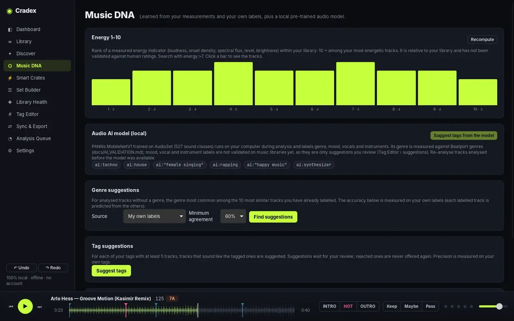
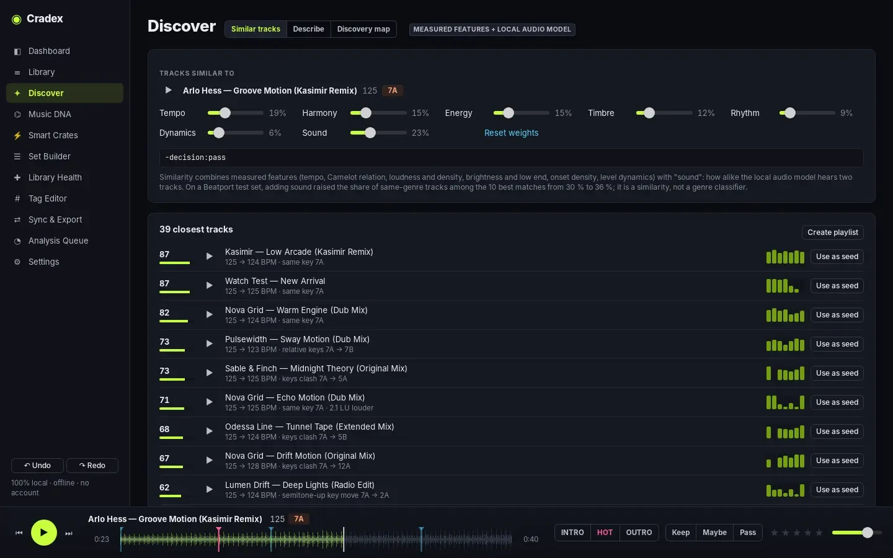
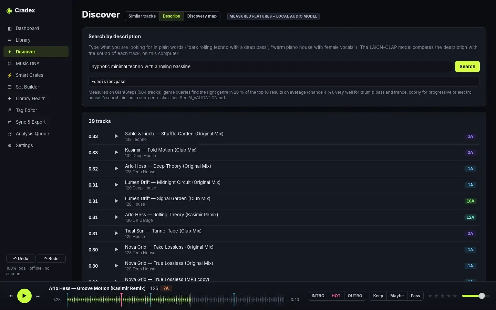
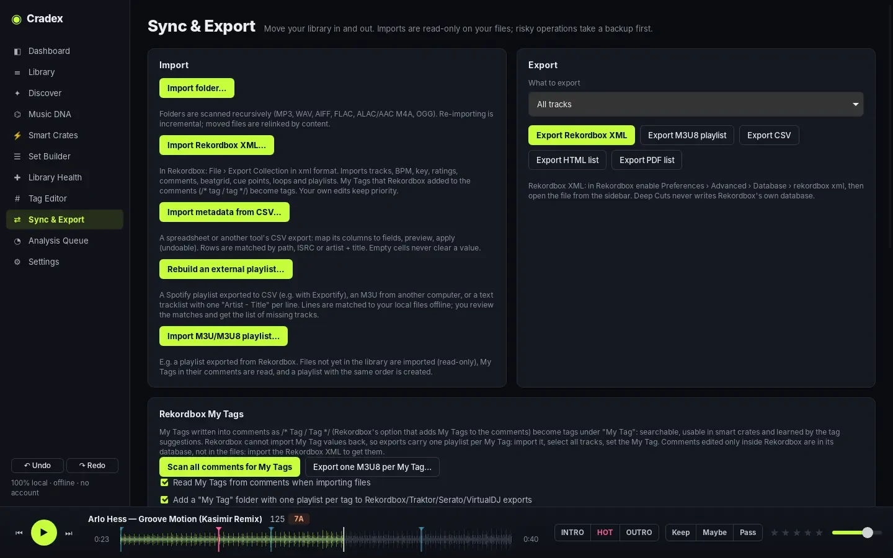

Private by design
Everything runs on your machine: analysis, AI models, search. No account, no telemetry. The only network calls are the ones you start yourself, like a model download or the optional online auto-tagger.
Deep Cuts analyses, triages, organises and exports your music on your own computer. No account. No subscription. Nothing uploaded.
Current version v0.2.0. Installers are not code-signed yet: the guide shows the one extra click.

Everything runs on your machine: analysis, AI models, search. No account, no telemetry. The only network calls are the ones you start yourself, like a model download or the optional online auto-tagger.
Every analysis and AI feature is tested on public benchmarks before it ships, and the numbers are published, weaknesses included. Features that did not beat the existing method were left out.
Import and export Rekordbox XML, Traktor NML, Serato crates and VirtualDJ, with BPM, key, cues, loops and beatgrids where the format has them. Rekordbox My Tags too.
Imports are read-only. Tags are written to files only when you ask, with a dry run and copies of the originals. Nothing is ever deleted, every edit can be undone, and the library is backed up daily.
A virtualised table built for 100,000+ tracks, a powerful search language and background analysis that survives restarts. The signal analysis of a five-minute MP3 takes under a second.
GPL-3.0 licensed, no paid tier, no lock-in. Your library lives in an open SQLite database, and a command-line tool works on the same data.
Import, listen, decide, find what fits, and take it to the booth.
Keep, Maybe or Pass with one key, rate with 1–5, and let auto-advance move you through new music. The details panel shows where every value came from: the file, Rekordbox, the analysis or you.
bpm:122-126 key:8A+ -decision:passTempo with beat phase, key in Camelot, Open Key or musical notation, EBU R128 loudness, brightness, low end, density and a 1–10 energy rank within your own library. A BPM range setting settles half-time and double-time the way Rekordbox and Traktor do.

Similar tracks combine measured features with how alike a local audio model hears two tracks; you choose what matters with sliders for tempo, harmony, energy, timbre, rhythm and sound.

“Hypnotic minimal techno with a rolling bassline.” An optional LAION-CLAP model compares your words with the sound of every track, on your computer. Best for broad descriptions; it is a search aid, not a sub-genre classifier.

Order a set by energy shape, see weak transitions, split it into chapters and get next-track suggestions ranked by harmonic and tempo compatibility. Export straight to Rekordbox XML, M3U8, PDF or HTML.

Everything you organise travels to your DJ software, playlists and folders included. Imports from other software take a backup first, and their own databases are never modified.

Missing files, duplicates, suspected transcodes, broken playlists and unused files, with a safe merge that moves extras to a trash folder.
Genre and tag suggestions learned from your own labels, with their accuracy measured on your library.
400 Discogs styles, moods, danceability and arousal/valence from MTG models you can download (non-commercial licence).
Find & replace with regex, CSV import with column mapping, rename and move files from tags, cover art, recipes.
Clean promo text, shouted capitals, feat. separators, genre spelling and remixer fields, with a preview.
New music imported automatically; daily snapshots, manual backups and restore with a safety copy.
Measured on public research corpora, chosen on a development set and checked once on held-out tracks. Full protocol and per-genre results in AI_VALIDATION.md.
| Result | What it measures | Test set |
|---|---|---|
| 92.5% | BPM right within 4 %; 98.0 % counting half and double tempo; 86.9 % within 0.05 BPM | Beatport-labelled tracks, held-out half (550) |
| 67.5% | Key, MIREX weighted score; 59.3 % exactly right | GiantSteps Key (604) |
| 61% | Optional MAEST styles: right Beatport genre first; 88 % within the top three (EffNet: 38 % and 80 %) | GiantSteps Key subset (143) |
| 42% | Optional Discogs-EffNet styles: right genre first; 75 % within the top three | GiantSteps Key (565) |
| 36% | Similar tracks of the same genre among the top 10, with the sound model (30 % without) | Beatport-labelled tracks |
| 20% | Search by description: right genre in the top 10 for a genre query (chance: 4 %) | GiantSteps Key (604) |
Apple silicon (M1–M4) runs the local audio models with Core ML; the Intel build has everything except the audio models.
Windows 10 or 11, 64-bit. The audio models use DirectML on your GPU when available.
64-bit, recent distributions (Ubuntu 24.04, Debian 13, Fedora 40 or newer).
The installers are not code-signed yet. macOS: right-click the app › Open the first time. Windows: “More info” › “Run anyway”. Step-by-step. Prefer to build it yourself? Build from source.
No. Importing only reads them. Tags are written to files only when you choose “Write tags to files”, with a dry run, copies of the originals and a read-back check. Duplicates are never deleted, only moved to a trash folder you can review.
Yes, through Rekordbox XML in both directions: tracks, BPM, key, ratings, comments, beatgrid, cues, loops and playlists. Deep Cuts never writes Rekordbox's own database. My Tags written into comments are read on import, and one playlist per My Tag can be exported.
No. There is no account and no telemetry. The network is used only when you start it: downloading an optional model, or the online auto-tagger, which sends artist, title, version and duration of the tracks you select to the catalogues you choose.
Nothing. Deep Cuts is free software under GPL-3.0. Some optional AI models from the Music Technology Group (UPF) carry a non-commercial licence; the app shows it before downloading.
MP3, WAV, AIFF, FLAC, ALAC and AAC (M4A) and OGG.